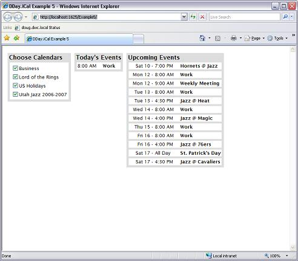

Title: Adding iCalendar support to your program - Part 1 Author: Douglas Day Email: doug@ddaysoftware.com Environment: C#, .NET 2.0 Keywords: Calendar, iCalendar, iCal, RFC2445, C#, .NET, Event, Todo Level: Beginner Description: This article describes the steps to load and view iCalendars in your program by using the DDay.iCal library. Section C# Libraries SubSection General

This article describes how to load and view iCalendars by using the DDay.iCal library. I will cover more advanced topics, such as creating, editing, and serializing iCalendars in my next article.
In this article, I will walk you through creating a console application that will load and display upcoming events to the user. I've also included an example project that demonstrates how to add this kind of support to an ASP.NET web application.
Many programmers have worked with adding some kind of calendar support to an application - from displaying upcoming events on a web site, to allowing personalized calendars, with the ability to alter them.
So, thousands of programmers, all adding calendar support to their applications. So, what's the problem with that? The historical answer is that no (or very few) programmers followed any kind of standard to implement their calendars. So, if you needed to accomplish anything else with the calendar that your original application didn't support, you'd have to write it by hand.
Also, these ad-hoc calendars are only viewable from the application that wrote them. What if you want to allow for recurrences in your calendar, so an event can recur "every 2nd-to-last Sunday of the month?" What if you want to publish your calendar, so others can subscribe to it, and view it from the calendar program they prefer? What if you want to display and manipulate calendars from multiple sources, including sources that you may not have control over?
These are some of the problems the iCalendar standard solves for us. If you didn't already know -- iCalendar is a W3C recommendation known as RFC 2445. You can find it here.
To begin, open Visual Studio 2005, and create a "Windows Console Application" project. Then, if you
haven't already done so, download the latest binary version
of DDay.iCal from SourceForge.net. Once you've done that, you simply need to add a reference to
DDay.iCal.dll from your project (i.e. click "Add Reference" from the "Project" menu).
Then, add the following to the top of the Program.cs file:
using DDay.iCal; using DDay.iCal.Components;
You're now ready to load your first iCalendar! There are multiple ways you can load iCalendars, ranging
from simply loading the file from your local filesystem, to loading from a WebDAV or CalDAV store, to
loading from a database. The possibilities are endless; however, in this article, we'll focus on simply
loading the file from your local filesystem. Add the following code to your Main() method
(of course, replacing the path with the actual path to your iCalendar file).
// Load the iCalendar from file iCalendar iCal = iCalendar.LoadFromFile(@"path\to\your\icalendar.ics");
Congratulations, you've loaded your iCalendar, and are ready to work with it! For now, let's display the events that occur today:
//
// Evaluate recurring events to determine if they will recur today
//
iCal.Evaluate(DateTime.Today, DateTime.Today.AddDays(1));
Console.WriteLine("Today's Events:");
// Iterate through each event we have to check if it occurs today
foreach(Event evt in iCal.Events)
{
if (evt.OccursOn(DateTime.Today))
Console.WriteLine(evt.Summary + ": " + evt.Start.Local.ToShortTimeString());
}
That's it! Let me explain each item above for clarity. The Evaluate() method is
used to evaluate recurring events to see if they occur in a given period of time. For example,
let's say you have an event that recurs daily ("Work", for example). In iCalendars, these are
represented by a single event, with a recurrence pattern. To determine if the event
will occur for any given day, that day needs to be Evaluated.
Then, we check each event that's contained in our iCalendar to see if it occurs today (using the OccursOn() method).
If it does, we output a short description of the event.
OK, now we've displayed all the events that occur today. Let's display all of the upcoming events that will occur within the next 7 days:
//
// Evaluate recurring events to determine if they will occur within the next 7 days
//
iCal.Evaluate(DateTime.Today, DateTime.Today.AddDays(7));
Console.WriteLine("Upcoming Events:");
// Start with tomorrow
DateTime testDate = DateTime.Today.AddDays(1);
while (testDate < DateTime.Today.AddDays(7))
{
foreach(Event evt in iCal.Events)
{
if (evt.OccursOn(testDate))
Console.WriteLine(evt.Summary + ": " + evt.Start.Local.ToShortTimeString());
}
testDate = testDate.AddDays(1);
}
This code does essentially the same thing as "Today's Events", except it works with more than 1 day at a time.
Here's the final result of Program.cs:
using System;
using System.Collections.Generic;
using System.Text;
// Required namespaces
using DDay.iCal;
using DDay.iCal.Components;
namespace ConsoleApplication1
{
class Program
{
static void Main(string[] args)
{
// Load the iCalendar from file
iCalendar iCal = iCalendar.LoadFromFile(@"Business.ics");
//
// Evaluate recurring events to determine if they will recur today
//
iCal.Evaluate(DateTime.Today, DateTime.Today.AddDays(1));
Console.WriteLine("Today's Events:");
// Iterate through each event we have to check if it occurs today
foreach (Event evt in iCal.Events)
{
if (evt.OccursOn(DateTime.Today))
Console.WriteLine(evt.Summary + ": " + evt.Start.Local.ToShortTimeString());
}
//
// Evaluate recurring events to determine if they will occur within the next 7 days
//
iCal.Evaluate(DateTime.Today, DateTime.Today.AddDays(7));
Console.WriteLine("Upcoming Events:");
// Start with tomorrow
DateTime testDate = DateTime.Today.AddDays(1);
while (testDate < DateTime.Today.AddDays(7))
{
foreach (Event evt in iCal.Events)
{
if (evt.OccursOn(testDate))
Console.WriteLine(evt.Summary + ": " + evt.Start.Local.ToShortTimeString());
}
testDate = testDate.AddDays(1);
}
}
}
}
For more information, visit the DDay.iCal homepage at ddaysoftware.com.
03/09/2007 - Posted